Mari bersama menjaga keindahan pesisir Lampulo. Dukung program penanaman, jadilah relawan, atau adopsi satu pohon mangrove hari ini untuk masa depan yang lebih hijau.
Kami melibatkan berbagai peran yang saling mendukung demi keberhasilan program penanaman dan pelestarian lingkungan. Setiap peran memiliki tanggung jawab dan kontribusi.
Individu atau kelompok yang berpartisipasi langsung dalam kegiatan penanaman mangrove serta dapat mengadopsi pohon sebagai bentuk dukungan terhadap pelestarian alam.
Mendampingi para relawan selama kegiatan berlangsung, memberikan edukasi lingkungan, serta memastikan kegiatan berjalan sesuai rencana dan aman bagi semua peserta.
Bertanggung jawab terhadap kondisi lapangan dan keberlanjutan pohon yang telah ditanam. Tracker juga melakukan monitoring serta melaporkan hasil pengamatan ke sistem.
Mengelola sistem secara keseluruhan, termasuk data pengguna, berita, kegiatan, dan pengaturan. Admin memastikan semua informasi tetap akurat dan sistem berjalan dengan baik.
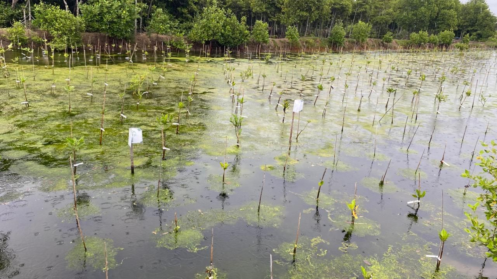
Banda Aceh (ANTARA) - Pemangku Mangrove Park Lampulo bersama komunitas anak muda Aceh yang tergabung dalam Ruang ... Baca Selengkapnya »
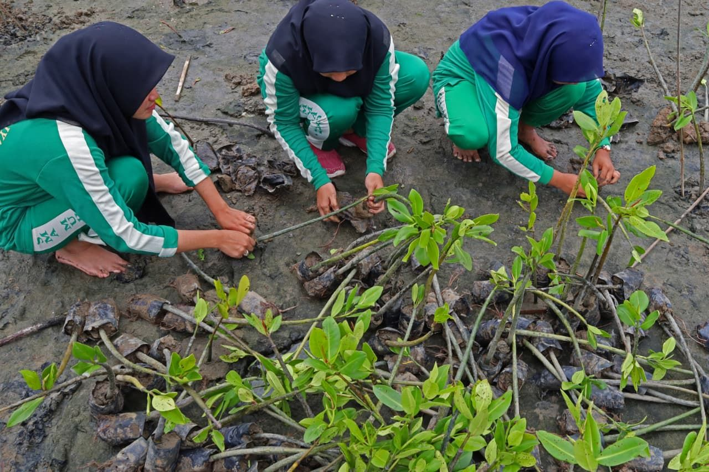
Pelajar di Kota Banda Aceh menanam 1.000 bibit mengrove sebagai upaya penanganan dampak perubahan iklim serta melahir... Baca Selengkapnya »
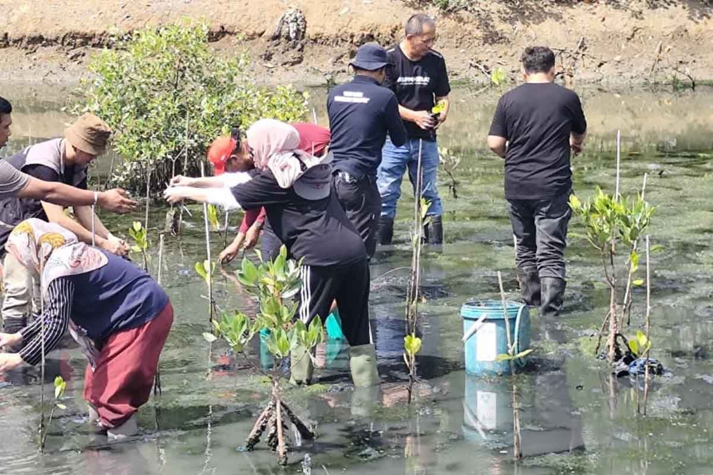
Pelaku pariwisata yang tergabung dalam Asosiasi Pelaku Pariwisata Indonesia (ASPPI) Aceh melakukan penanaman mangrove... Baca Selengkapnya »
Lewat program Adopsi Mangrove, kamu bisa ikut menjaga pesisir Lampulo agar tetap hijau dan lestari. Setiap pohon yang kamu adopsi akan ditanam, dirawat, dan dilaporkan perkembangannya secara berkala.
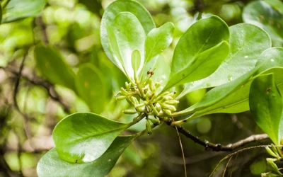
Memiliki daun oval tebal berwarna hijau mengilap dan tumbuh di tanah berlumpur padat.
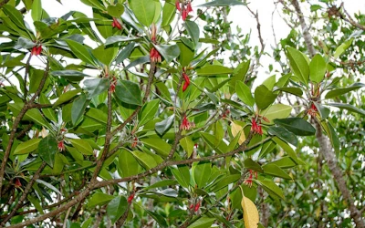
Memiliki akar lutut kokoh dan bunga kemerahan, tumbuh di zona pasang surut.
Ringkasan data konservasi Mangrove Park Lampulo.
Total Pohon
Luas Area (m²)
Total Blok Area
Jenis Mangrove
Jenis Fauna
Relawan Aktif
Pemandu Aktif
"Menjaga pesisir bukan hanya tentang menanam, tetapi memastikan ekosistem terus hidup dan berkembang."
“Hutan mangrove bukan hanya rumah bagi pohon, tapi juga bagi kehidupan yang bersembunyi di antara akar dan lumpur.”
Mari kenali para penghuni kecil yang menjaga keseimbangan ekosistem pesisir Lampulo.
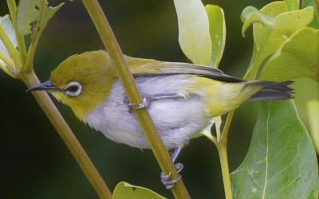
Zosterops flavus
Burung kecil pemakan nektar dengan suara khas melengking.
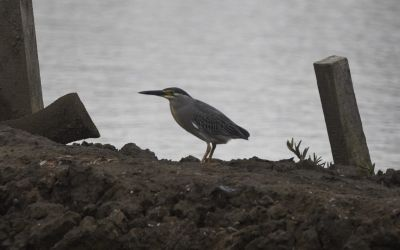
Butorides striata
Burung air berleher pendek yang sering ditemukan di area mangrove.
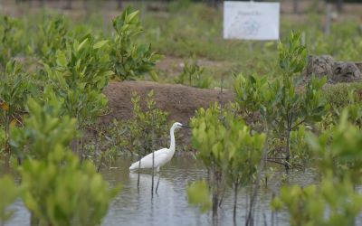
Egretta garzetta
Spesies kuntul putih kecil yang sering terlihat di pesisir dan tambak.
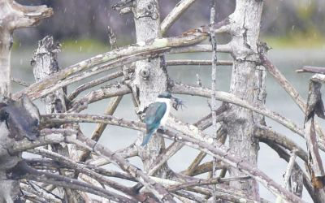
Todiramphus sanctus
Burung raja-udang dengan warna biru mencolok dan suara nyaring.
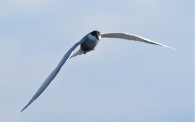
Sterna paradisaea
Migran jarak jauh, terbang dari Arktik ke Antartika setiap tahun.
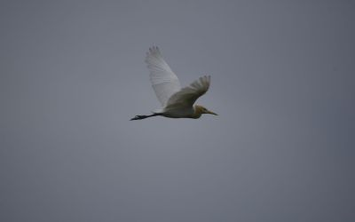
Bubulcus ibis
Umumnya terlihat di sekitar padang rumput dan hewan ternak.
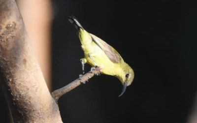
Cinnyris jugularis
Burung kecil pengisap madu dengan warna kuning cerah.
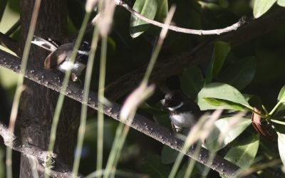
Rhipidura javanica
Burung kecil yang aktif mengibas-ngibaskan ekor saat mencari serangga.
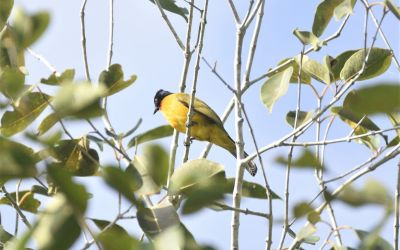
Brachypodius atriceps
Burung berkicau dengan warna gelap dan suara melengking.
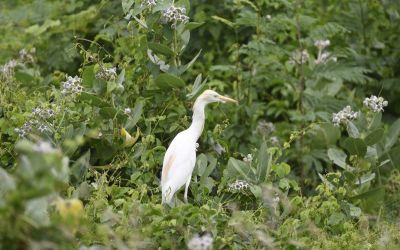
Bubulcus ibis
Varian kuntul putih yang sering mengikuti hewan besar.
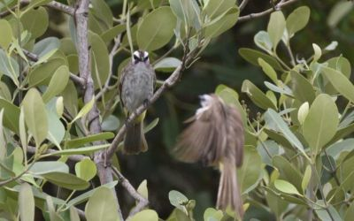
Pycnonotus goiavier
Burung kicau populer dengan suara nyaring dan aktif di semak belukar.
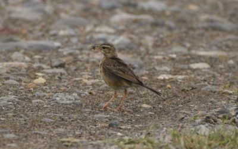
Anthus similis / Anthus rufulus
Burung pemakan biji yang umum di sawah dan padang rumput.
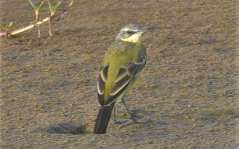
Motacilla flava
Burung kecil berwarna kuning cerah yang sering menari di tepi air.
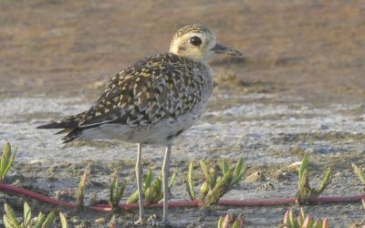
Pluvialis fulva
Burung pantai bermigrasi dengan bulu coklat keemasan di musim kawin.
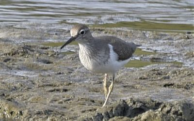
Actitis hypoleucos
Burung pantai kecil yang suka mengibas-ngibaskan ekornya saat berjalan.
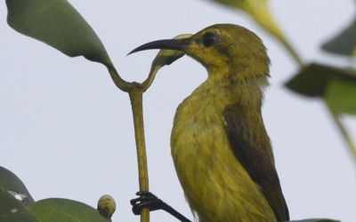
Cinnyris jugularis
Burung pengisap madu umum di taman dan daerah mangrove.
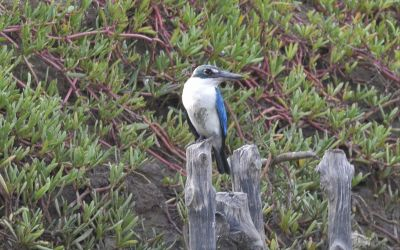
Todiramphus chloris
Burung raja-udang dengan kepala besar dan paruh panjang.
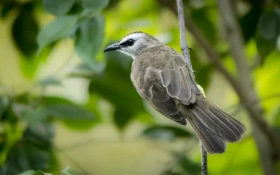
Pycnonotus goiavier
Burung kicau aktif di semak belukar, sering disebut juga cucak kutilang.
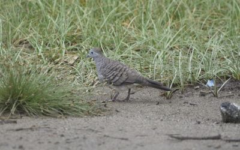
Geopelia striata
Merpati kecil berpola garis di dada, umum ditemukan di perkotaan.
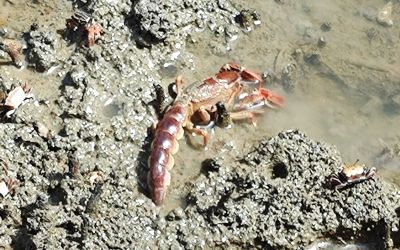
Thalassina anomala
Krustasea penghuni lumpur mangrove yang membuat gundukan pasir besar.
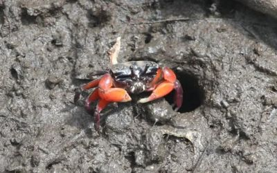
Tubuca rosea
Kepiting kecil penghuni lumpur mangrove yang memiliki capit berwarna merah mencolok.
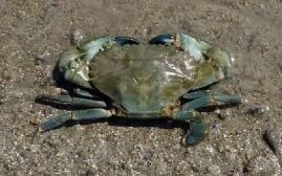
Scylla serrata
Spesies kepiting besar penghuni akar mangrove yang bernilai ekonomi tinggi.
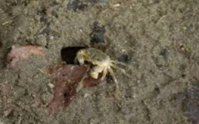
Parasesarma plicatum
Kepiting kecil berwarna gelap yang hidup di sela bebatuan dan akar mangrove.
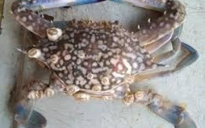
Plagusia dentipes
Kepiting datar dengan kaki lebar yang sering menempel pada batu atau kapal di perairan dangkal.
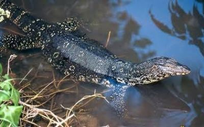
Varanus salvator
Reptil besar pemangsa ikan dan hewan kecil yang sering ditemukan di sekitar hutan mangrove.
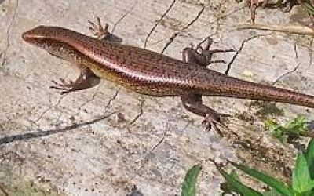
Eutropis multifasciata
Kadal kecil yang aktif di siang hari dan membantu mengendalikan populasi serangga.
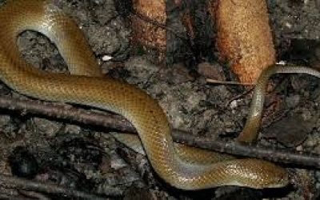
Hypsiscopus plumbea
Ular jinak berwarna abu-abu gelap yang sering terlihat berenang di sungai atau mangrove.
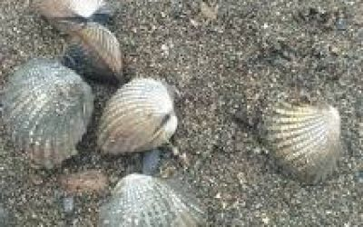
Anadara granosa
Kerang berwarna coklat kemerahan dengan daging yang kaya zat besi dan hidup di lumpur pesisir.
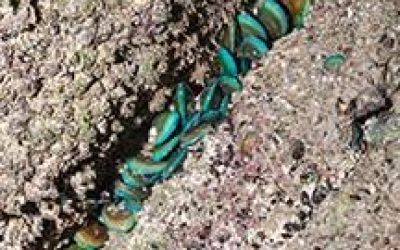
Perna viridis
Kerang laut berwarna hijau zamrud yang menempel pada struktur keras seperti tiang dermaga.
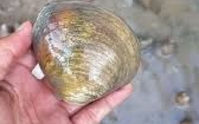
Geloina erosa
Kerang besar air payau yang sering dijumpai di lumpur hutan mangrove.
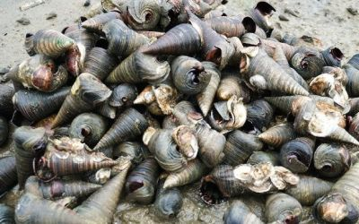
Faunus ater
Siput berukuran sedang dengan cangkang panjang yang hidup di perairan estuari.
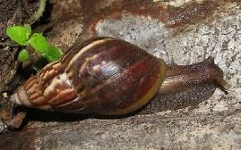
Achatina fulica
Siput darat besar bercangkang coklat spiral yang dikenal sebagai hama tanaman.
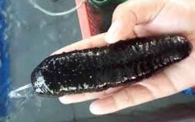
Holothuria atra
Hewan laut berbentuk silindris yang berperan penting dalam membersihkan dasar laut.
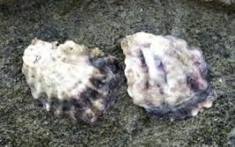
Crassostrea sp.
Hewan bercangkang ganda yang hidup menempel di batu dan menyaring air laut untuk makan.
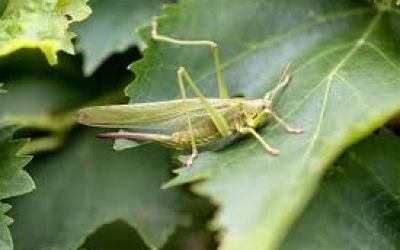
Oecanthus latipennis
Serangga malam penghasil suara khas yang berperan penting dalam rantai makanan.
Coleoptera sp.
Serangga kecil berwarna kuning mengilap dengan sayap keras khas kumbang.
Lampyridae sp.
Serangga bercahaya yang menyala di malam hari melalui reaksi bioluminesensi.
Tabanus striatus
Serangga penghisap darah dengan gigitan kuat yang aktif di siang hari.
Culicidae sp.
Serangga kecil penghisap darah yang juga menjadi pakan bagi banyak fauna lain.
Dolichoderus thoracicus
Semut sosial pekerja keras yang membantu menjaga keseimbangan ekosistem tanah.
“Setiap burung-burung yang menari di tepi air, hingga kepiting, kerang, dan siput yang bersembunyi di lumpur adalah bagian dari rantai kehidupan yang saling menjaga. Dengan melindungi mereka, kita sesungguhnya sedang menjaga diri kita sendiri.”
Lihat bagaimana relawan, pengunjung, dan masyarakat bersama menanam harapan di pesisir Lampulo
Suara mereka yang telah merasakan keindahan Mangrove Park Lampulo